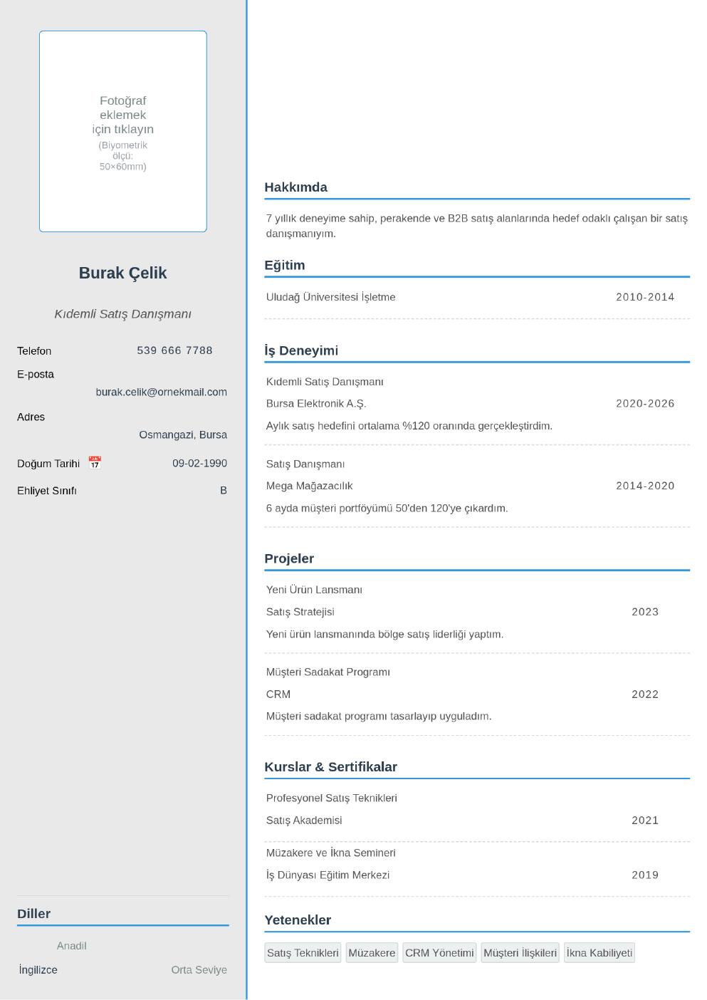

Satış Danışmanı CV Örneği ve Hazırlama Rehberi
✨ Bu şablonu MobilCV'de düzenle - ücretsiz, üyeliksiz, 1 dakikada!
🚀 Bu Şablonu MobilCV'de DüzenleSatış pozisyonlarına başvururken CV'niz, geçmiş performansınızı somut rakamlarla desteklemelidir. İşe alım uzmanları satış CV'lerinde en çok ölçülebilir başarılara ve müşteri ilişkileri becerilerine odaklanır.
Satış Performansınızı Rakamlarla Gösterin
Ulaştığınız satış hedeflerini, ciro artışlarını veya müşteri portföyü büyüklüğünüzü somut sayılarla belirtin. Genel ifadeler yerine ölçülebilir başarılar CV'nizi güçlendirir.
- Örnek: "Aylık satış hedefini ortalama %120 oranında gerçekleştirdim."
- Örnek: "6 ayda müşteri portföyümü 50'den 120'ye çıkardım."
- Örnek: "Yeni ürün lansmanında bölge satış liderliğini elde ettim."
Müşteri İlişkileri Becerilerinizi Vurgulayın
İkna kabiliyeti, müzakere becerisi, müşteri şikayetlerini çözme gibi yetkinliklerinizi somut örneklerle destekleyin. Bu beceriler satış pozisyonlarında teknik bilgi kadar önemlidir.
Kullandığınız CRM ve Satış Araçlarını Belirtin
Salesforce, HubSpot gibi CRM yazılımları veya satış takip araçları konusundaki deneyiminizi CV'nizde ayrı bir bölümde belirtin.
Sektör Deneyiminizi Netleştirin
Hangi sektörlerde (perakende, B2B, otomotiv, gayrimenkul vb.) satış deneyiminiz olduğunu açıkça belirtmek, başvurduğunuz pozisyonla uyumunuzu gösterir.
Sonuç
Satış danışmanı CV'nizde somut satış rakamlarınızı ve müşteri ilişkileri becerilerinizi öne çıkarmak işe alım sürecinde fark yaratır. Aşağıdaki butona tıklayarak ücretsiz CV şablonunu doldurmaya başlayabilirsiniz.
📄 Doldurulmuş Örnek CV
Yukarıdaki ipuçlarına göre hazırlanmış, Satış Danışmanı pozisyonu için doldurulmuş örnek bir CV. Kendi bilgilerinle aynı şekilde doldurabilirsin.

✨ CV'ni hemen oluştur!
🚀 MobilCV ile CV Oluştur